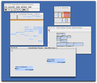

The Chainbuilder is a Shoola agent that supports the browsing and examination of OME's library of analysis modules and chains, and the use of those components to construct new chains. This document will provide a brief overview of the various components of the chainbuilder, along with descriptions of how they interact and instructions for adding constructed chains to the database.
The Chainbuilder is built around the concept of palettes: libraries of components that can be dragged and dropped onto a canvas to form the basis of new chains.
Analysis modules are the basic building blocks from which new chains are created. The module palette displays the available modules in a 2D-layout, grouped by category.
Existing chains can also be used as starting points for creation of new chains. The chain palette displays all of the available chains in the database.
Chains and modules provide the building blocks for new chains. To build a chain, open a new chain creation canvas, drag and drop chains and modules onto the canvas, create connections between the appropriate inputs and outputs, and then save the chain. Newly saved chains will be added to the chain palette.
The first step in creating a chain is to start the chainbuilder by
pressing the chainbuilder button  .An example session with the chain
builder is shown below.
.An example session with the chain
builder is shown below.
|  |
| Fig 1-1: The
Chain builder windows. Clockwise from top-left: the main Shoola task
bar, the chain palette overview, module palette, chain creation
canvas, and chain pallette. enlarge image |